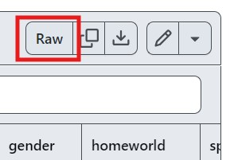
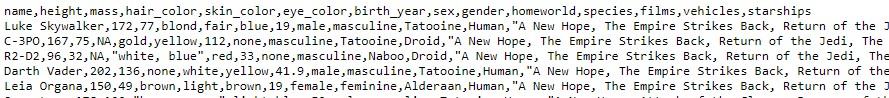
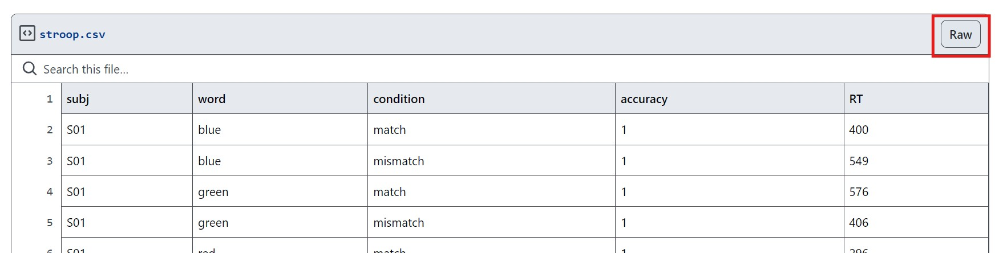
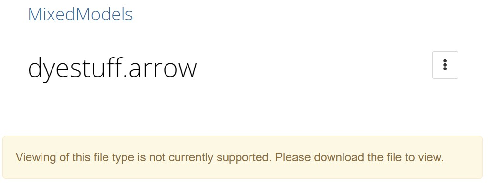
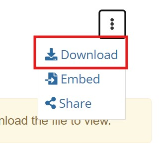

Read files on the web into R
June Choe ![]()
Every so often I’ll have a link to some file on hand and want to read it in R without going out of my way to browse the web page, find a download link, download it somewhere onto my computer, grab the path to it, and then finally read it into R.
Over the years I’ve accumulated some tricks to get data into R “straight from a url”, even if the url does not point to the raw file contents itself. The method varies between data sources though, and I have a hard time keeping track of them in my head, so I thought I’d write some of these down for my own reference. This is not meant to be comprehensive though - keep in mind that I’m someone who primarily works with tabular data and interface with GitHub and OSF as data repositories.
GitHub (public repos)
GitHub has nice a point-and-click interface for browsing repositories and previewing files. For example, you can navigate to the dplyr::starwars dataset from tidyverse/dplyr, at https://github.com/tidyverse/dplyr/blob/main/data-raw/starwars.csv:

That url, despite ending in a .csv, does not point to the raw data - instead, the contents of the page is a full html document:
rvest::read_html("https://github.com/tidyverse/dplyr/blob/main/data-raw/starwars.csv") {html_document}
<html lang="en" data-color-mode="auto" data-light-theme="light" ...
[1] <head>\n<meta http-equiv="Content-Type" content="text/html; charset=UTF-8 ...
[2] <body class="logged-out env-production page-responsive" style="word-wrap: ...To actually point to the csv contents, we want to click on the Raw button to the top-right corner of the preview:

That gets us to the comma separated values we want, which is at a new url https://raw.githubusercontent.com/tidyverse/dplyr/main/data-raw/starwars.csv:

We can then read from that URL at “raw.githubusercontent.com/…” using read.csv():
Rows: 87
Columns: 14
$ name <chr> "Luke Skywalker", "C-3PO", "R2-D2", "Darth Vader", "Leia Or…
$ height <int> 172, 167, 96, 202, 150, 178, 165, 97, 183, 182, 188, 180, 2…
$ mass <dbl> 77.0, 75.0, 32.0, 136.0, 49.0, 120.0, 75.0, 32.0, 84.0, 77.…
$ hair_color <chr> "blond", NA, NA, "none", "brown", "brown, grey", "brown", N…
$ skin_color <chr> "fair", "gold", "white, blue", "white", "light", "light", "…
$ eye_color <chr> "blue", "yellow", "red", "yellow", "brown", "blue", "blue",…
$ birth_year <dbl> 19.0, 112.0, 33.0, 41.9, 19.0, 52.0, 47.0, NA, 24.0, 57.0, …
$ sex <chr> "male", "none", "none", "male", "female", "male", "female",…
$ gender <chr> "masculine", "masculine", "masculine", "masculine", "femini…
$ homeworld <chr> "Tatooine", "Tatooine", "Naboo", "Tatooine", "Alderaan", "T…
$ species <chr> "Human", "Droid", "Droid", "Human", "Human", "Human", "Huma…
$ films <chr> "A New Hope, The Empire Strikes Back, Return of the Jedi, R…
$ vehicles <chr> "Snowspeeder, Imperial Speeder Bike", "", "", "", "Imperial…
$ starships <chr> "X-wing, Imperial shuttle", "", "", "TIE Advanced x1", "", …But note that this method of “click the Raw button to get the corresponding raw.githubusercontent.com/… url to the file contents” will not work for file formats that cannot be displayed in plain text (clicking the button will instead download the file via your browser). So sometimes (especially when you have a binary file) you have to construct this “remote-readable” url to the file manually.
Fortunately, going from one link to the other is pretty formulaic. To demonstrate the difference with the url for the starwars dataset again:
emphatic::hl_diff(
"https://github.com/tidyverse/dplyr/blob/main/data-raw/starwars.csv",
"https://raw.githubusercontent.com/tidyverse/dplyr/main/data-raw/starwars.csv"
)[1] "https:// github .com/tidyverse/dplyr/blob/main/data-raw/starwars.csv"
[1] "https://raw.githubusercontent.com/tidyverse/dplyr /main/data-raw/starwars.csv"
GitHub (gists)
It’s a similar idea with GitHub Gists, where I sometimes like to store small toy datasets for use in demos. For example, here’s a link to a simulated data for a Stroop experiment stroop.csv: https://gist.github.com/yjunechoe/17b3787fb7aec108c19b33d71bc19bc6.
But that’s again a full-on webpage. The url which actually hosts the csv contents is https://gist.githubusercontent.com/yjunechoe/17b3787fb7aec108c19b33d71bc19bc6/raw/c643b9760126d92b8ac100860ac5b50ba492f316/stroop.csv, which you can again get to by clicking the Raw button at the top-right corner of the gist

But actually, that long link you get by default points to the current commit, specifically. If you instead want the link to be kept up to date with the most recent commit, you can omit the second hash that comes after raw/:
emphatic::hl_diff(
"https://gist.githubusercontent.com/yjunechoe/17b3787fb7aec108c19b33d71bc19bc6/raw/c643b9760126d92b8ac100860ac5b50ba492f316/stroop.csv",
"https://gist.githubusercontent.com/yjunechoe/17b3787fb7aec108c19b33d71bc19bc6/raw/stroop.csv"
)[1] "https://gist.githubusercontent.com/yjunechoe/17b3787fb7aec108c19b33d71bc19bc6/raw/c643b9760126d92b8ac100860ac5b50ba492f316/stroop.csv"
[1] "https://gist.githubusercontent.com/yjunechoe/17b3787fb7aec108c19b33d71bc19bc6/raw /stroop.csv"
In practice, I don’t use gists to store replicability-sensitive data, so I prefer to just use the shorter link that’s not tied to a specific commit.
Rows: 240
Columns: 5
$ subj <chr> "S01", "S01", "S01", "S01", "S01", "S01", "S01", "S01", "S02…
$ word <chr> "blue", "blue", "green", "green", "red", "red", "yellow", "y…
$ condition <chr> "match", "mismatch", "match", "mismatch", "match", "mismatch…
$ accuracy <int> 1, 1, 1, 1, 1, 1, 1, 0, 1, 0, 0, 1, 1, 1, 1, 1, 1, 1, 1, 1, …
$ RT <int> 400, 549, 576, 406, 296, 231, 433, 1548, 561, 1751, 286, 710…GitHub (private repos)
We now turn to the harder problem of accessing a file in a private GitHub repository. If you already have the GitHub webpage open and you’re signed in, you can follow the same step of copying the link that the Raw button redirects to.
Except this time, when you open the file at that url (assuming it can display in plain text), you’ll see the url come with a “token” attached at the end (I’ll show an example further down). This token is necessary to remotely access the data in a private repo. Once a token is generated, the file can be accessed using that token from anywhere, but note that it will expire at some point as GitHub refreshes tokens periodically (so treat them as if they’re for single use).
For a more robust approach, you can use the GitHub Contents API. If you have your credentials set up in {gh} (which you can check with gh::gh_whoami()), you can request a token-tagged url to the private file using the syntax:1
gh::gh("/repos/{user}/{repo}/contents/{path}")$download_urlNote that this is actually also a general solution to getting a url to GitHub file contents. So for example, even without any credentials set up you can point to dplyr’s starwars.csv since that’s publicly accessible. This method produces the same “raw.githubusercontent.com/…” url we saw earlier:
gh::gh("/repos/tidyverse/dplyr/contents/data-raw/starwars.csv")$download_url [1] "https://raw.githubusercontent.com/tidyverse/dplyr/main/data-raw/starwars.csv"Now for a demonstration with a private repo, here is one of mine that you cannot access https://github.com/yjunechoe/my-super-secret-repo. But because I set up my credentials in {gh}, I can generate a link to a content within that repo with the access token attached (“?token=…”):
[1] "https://raw.githubusercontent.com/yjunechoe/my-super-secret-repo/main/README.md?token=AMTCUR2JPXCIX5..."I can then use this url to read the private file:2
OSF
OSF (the Open Science Framework) is another data repository that I interact with a lot, and reading files off of OSF follows a similar strategy to fetching public files on GitHub.
Consider, for example, the dyestuff.arrow file in the OSF repository for MixedModels.jl. Browsing the repository through the point-and-click interface can get you to the page for the file at https://osf.io/9vztj/, where it shows:

The download button can be found inside the dropdown menubar to the right:

But instead of clicking on the icon (which will start a download via the browser), we can grab the embedded link address: https://osf.io/download/9vztj/. That url can then be passed directly into a read function:
arrow::read_feather("https://osf.io/download/9vztj/") |>
dplyr::glimpse() Rows: 30
Columns: 2
$ batch <fct> A, A, A, A, A, B, B, B, B, B, C, C, C, C, C, D, D, D, D, D, E, E…
$ yield <int> 1545, 1440, 1440, 1520, 1580, 1540, 1555, 1490, 1560, 1495, 1595…You might have already caught on to this, but the pattern is to simply point to osf.io/download/ instead of osf.io/.
This method also works for view-only links to anonymized OSF projects as well. For example, this is an anonymized link to a csv file from one of my projects https://osf.io/tr8qm?view_only=998ad87d86cc4049af4ec6c96a91d9ad. Navigating to this link will show a web preview of the csv file contents.
By inserting /download into this url, we can read the csv file contents directly:
Item plaus_bias trans_bias
1 Awakened -0.29631221 -1.2200901
2 Calmed 0.09877074 -0.4102332
3 Choked 1.28401957 -1.4284905
4 Dressed -0.59262442 -1.2087228
5 Failed -0.98770736 0.1098839
6 Groomed -1.08647810 0.9889550See also the {osfr} package for a more principled interface to OSF.
Aside: Can’t go wrong with a copy-paste!
Reading remote files aside, I think it’s severely underrated how base R has a readClipboard() function and a collection of read.*() functions which can also read directly from a "clipboard" connection.3
I sometimes do this for html/markdown summary tables that a website might display, or sometimes even for entire excel/googlesheets tables after doing a select-all + copy. For such relatively small chunks of data that you just want to quickly get into R, you can lean on base R’s clipboard functionalities.
For example, given this markdown table:
You can copy its contents and run the following code to get that data back as an R data frame:
read.delim("clipboard")
# Or, `read.delim(text = readClipboard())` cyl mpg
1 4 26.66364
2 6 19.74286
3 8 15.10000If you’re instead copying something flat like a list of numbers or strings, you can also use scan() and specify the appropriate sep to get that data back as a vector:4
scan("clipboard", sep = ",")
# Or, `scan(textConnection(readClipboard()), sep = ",")` [1] 1 2 3 4 5 6 7 8 9 10It should be noted though that parsing clipboard contents is not a robust feature in base R. If you want a more principled approach to reading data from clipboard, you should use {datapasta}. And for printing data for others to copy-paste into R, use {constructive}. See also {clipr} which extends clipboard read/write functionalities.
Other goodies
⚠️ What lies ahead are denser than the kinds of “low-tech” advice I wrote about above.
Streaming with {duckdb}
One caveat to all the “read from web” approaches I covered above is that it often does not actually circumvent the action of downloading the file onto your computer. For example, when you read a file from “raw.githubusercontent.com/…” with read.csv(), there is an implicit download.file() of the data into the current R session’s tempdir().
An alternative that actually reads the data straight into memory is streaming. Streaming is moreso a feature of database languages, but there’s good integration of such tools with R, so this option is available from within R as well.
Here, I briefly outline what I learned from (mostly) reading a blog post by François Michonneau, which covers how to stream remote files using {duckdb}. It’s pretty comprehensive but I wanted to make a template for just one method that I prefer.
We start by loading the {duckdb} package, creating a connection to an in-memory database, installing the httpfs extension (if not installed already), and loading httpfs for the database.
For this example I will use a parquet file from one of my projects which is hosted on GitHub: https://github.com/yjunechoe/repetition_events. The data I want to read is at the relative path /data/tokens_data/childID=1/part-7.parquet. I went ahead and converted that into the “raw contents” url shown below:
# A parquet file of tokens from a sample of child-directed speech
file <- "https://raw.githubusercontent.com/yjunechoe/repetition_events/master/data/tokens_data/childID%3D1/part-7.parquet"
# For comparison, reading its contents with {arrow}
arrow::read_parquet(file) |>
head(5) # A tibble: 5 × 3
utterance_id gloss part_of_speech
<int> <chr> <chr>
1 1 www ""
2 2 bye "co"
3 3 mhm "co"
4 4 Mommy's "n:prop"
5 4 here "adv"In duckdb, the httpfs extension we loaded above allows PARQUET_SCAN5 to read a remote parquet file.
SELECT *
FROM PARQUET_SCAN("https://raw.githubusercontent.com/yjunechoe/repetition_events/master/data/tokens_data/childID%3D1/part-7.parquet")
LIMIT 5;dbGetQuery(con, query1) utterance_id gloss part_of_speech
1 1 www
2 2 bye co
3 3 mhm co
4 4 Mommy's n:prop
5 4 here advAnd actually, in my case, the parquet file represents one of many files that had been previously split up via hive partitioning. To preserve this metadata even as I read in just a single file, I need to do two things:
- Specify
hive_partitioning=truewhen callingPARQUET_SCAN. - Ensure that the hive-partitioning syntax is represented in the url with
URLdecode()(since the=character can sometimes be escaped, as in this case).
[1] "https://raw.githubusercontent.com/yjunechoe/repetition_events/master/data/tokens_data/childID%3D1/part-7.parquet"
[1] "https://raw.githubusercontent.com/yjunechoe/repetition_events/master/data/tokens_data/childID= 1/part-7.parquet"
With that, the data now shows that the observations are from child #1 in the sample.
SELECT *
FROM PARQUET_SCAN(
"https://raw.githubusercontent.com/yjunechoe/repetition_events/master/data/tokens_data/childID=1/part-7.parquet",
hive_partitioning=true
)
LIMIT 5;dbGetQuery(con, query2) utterance_id gloss part_of_speech childID
1 1 www 1
2 2 bye co 1
3 3 mhm co 1
4 4 Mommy's n:prop 1
5 4 here adv 1To do this more programmatically over all parquet files under /tokens_data in the repository, we need to transition to using the GitHub Trees API. The idea is similar to using the Contents API but now we are requesting a list of all files using the following syntax:
gh::gh("/repos/{user}/{repo}/git/trees/{branch/tag/commitSHA}?recursive=true")$treeTo get the file tree of the repo on the master branch, we use:
files <- gh::gh("/repos/yjunechoe/repetition_events/git/trees/master?recursive=true")$treeWith recursive=true, this returns all files in the repo. Then, we can filter for just the parquet files we want with a little regex:
[1] 70head(parquet_files) [1] "data/tokens_data/childID=1/part-7.parquet"
[2] "data/tokens_data/childID=10/part-0.parquet"
[3] "data/tokens_data/childID=11/part-6.parquet"
[4] "data/tokens_data/childID=12/part-3.parquet"
[5] "data/tokens_data/childID=13/part-1.parquet"
[6] "data/tokens_data/childID=14/part-2.parquet"Finally, we complete the path using the “https://raw.githubusercontent.com/…” url:
[1] "https://raw.githubusercontent.com/yjunechoe/repetition_events/master/data/tokens_data/childID=1/part-7.parquet"
[2] "https://raw.githubusercontent.com/yjunechoe/repetition_events/master/data/tokens_data/childID=10/part-0.parquet"
[3] "https://raw.githubusercontent.com/yjunechoe/repetition_events/master/data/tokens_data/childID=11/part-6.parquet"
[4] "https://raw.githubusercontent.com/yjunechoe/repetition_events/master/data/tokens_data/childID=12/part-3.parquet"
[5] "https://raw.githubusercontent.com/yjunechoe/repetition_events/master/data/tokens_data/childID=13/part-1.parquet"
[6] "https://raw.githubusercontent.com/yjunechoe/repetition_events/master/data/tokens_data/childID=14/part-2.parquet"Back on duckdb, we can use PARQUET_SCAN to read multiple files by supplying a vector ['file1.parquet', 'file2.parquet', ...].6 This time, we also ask for a quick computation to count the number of distinct childIDs:
SELECT count(DISTINCT childID)
FROM PARQUET_SCAN(
['https://raw.githubusercont ... data/childID=9/part-64.parquet'],
hive_partitioning=true
)dbGetQuery(con, query3) count(DISTINCT childID)
1 70This returns 70 which matches the length of the parquet_files vector listing the files that had been partitioned by childID.
For further analyses, we can CREATE TABLE7 our data in our in-memory database con:
query4 <- glue::glue_sql("
CREATE TABLE tokens_data AS
SELECT *
FROM PARQUET_SCAN([{parquet_files*}], hive_partitioning=true)
", .con = con)
invisible(dbExecute(con, query4))
dbListTables(con) [1] "tokens_data"That lets us reference the table via dplyr::tbl(), at which point we can switch over to another high-level interface like {dplyr} to query it using its familiar functions:
# A tibble: 6 × 2
gloss n
<chr> <dbl>
1 go 13614
2 see 13114
3 do 11829
4 have 10794
5 want 10560
6 put 9190Combined, here’s one (hastily put together) attempt at wrapping this workflow into a function:
load_dataset_from_gh <- function(con, tblname, user, repo, branch, regex,
partition = TRUE, lazy = TRUE) {
allfiles <- gh::gh(glue::glue("/repos/{user}/{repo}/git/trees/{branch}?recursive=true"))$tree
files_relpath <- grep(regex, sapply(allfiles, `[[`, "path"), value = TRUE)
# Use the actual Contents API here instead, if the repo is private
files <- glue::glue("https://raw.githubusercontent.com/{user}/{repo}/{branch}/{files_relpath}")
type <- if (lazy) quote(VIEW) else quote(TABLE)
partition <- as.integer(partition)
dbExecute(con, "LOAD httpfs;")
dbExecute(con, glue::glue_sql("
CREATE {type} {`tblname`} AS
SELECT *
FROM PARQUET_SCAN([{parquet_files*}], hive_partitioning={partition})
", .con = con))
invisible(TRUE)
}
con2 <- dbConnect(duckdb())
load_dataset_from_gh(
con = con2,
tblname = "tokens_data",
user = "yjunechoe",
repo = "repetition_events",
branch = "master",
regex = ".*data/tokens_data/.*parquet$"
)
tbl(con2, "tokens_data") # Source: table<tokens_data> [?? x 4]
# Database: DuckDB v1.0.0 [jchoe@Windows 10 x64:R 4.4.1/:memory:]
utterance_id gloss part_of_speech childID
<int> <chr> <chr> <dbl>
1 1 www "" 1
2 2 bye "co" 1
3 3 mhm "co" 1
4 4 Mommy's "n:prop" 1
5 4 here "adv" 1
6 5 wanna "mod:aux" 1
7 5 sit "v" 1
8 5 down "adv" 1
9 6 there "adv" 1
10 7 let's "v" 1
# ℹ more rowsOther sources for data
In writing this blog post, I’m indebted to all the knowledgeable folks on Mastodon who suggested their own recommended tools and workflows for various kinds of remote data. Unfortunately, I’m not familiar enough with most of them enough to do them justice, but I still wanted to record the suggestions I got from there for posterity.
First, a post about reading remote files would not be complete without a mention of the wonderful {googlesheets4} package for reading from Google Sheets. I debated whether I should include a larger discussion of {googlesheets4}, and despite using it quite often myself I ultimately decided to omit it for the sake of space and because the package website is already very comprehensive. I would suggest starting from the Get Started vignette if you are new and interested.
Second, along the lines of {osfr}, there are other similar rOpensci packages for retrieving data from the kinds of data sources that may be of interest to academics, such as {deposits} for zenodo and figshare, and {piggyback} for GitHub release assets (Maëlle Salmon’s comment pointed me to the first two; I responded with some of my experiences). I was also reminded that {pins} exists - I’m not familiar with it myself so I thought I wouldn’t write anything for it here BUT Isabella Velásquez came in clutch sharing a recent talk on dynamically loading up-to-date data with {pins} which is a great demo of the unique strengths of {pins}.
Lastly, I inadvertently(?) started some discussion around remotely accessing spatial files. I don’t work with spatial data at all but I can totally imagine how the hassle of the traditional click-download-find-load workflow would be even more pronounced for spatial data which are presumably much larger in size and more difficult to preview. On this note, I’ll just link to Carl Boettiger’s comment about the fact that GDAL has a virtual file system that you can interface with from R packages wrapping this API (ex: {gdalraster}), and to Michael Sumner’s comment/gist + Chris Toney’s comment on the fact that you can even use this feature to stream non-spatial data!
Miscellaneous tips and tricks
I also have some random tricks that are more situational. Unfortunately, I can only recall like 20% of them at any given moment, so I’ll be updating this space as more come back to me:
When reading remote
.rdaor.RDatafiles withload(), you may need to wrap the link inurl()first (ref: stackoverflow).{vroom}can remotely read gzipped files, without having todownload.file()andunzip()first.{curl}, of course, will always have the most comprehensive set of low-level tools you need to read any arbitrary data remotely. For example, usingcurl::curl_fetch_memory()to read thedplyr::stormsdata again from the GitHub raw contents link:
fetched <- curl::curl_fetch_memory(
"https://raw.githubusercontent.com/tidyverse/dplyr/main/data-raw/starwars.csv"
)
read.csv(text = rawToChar(fetched$content)) |>
dplyr::glimpse() Rows: 87
Columns: 14
$ name <chr> "Luke Skywalker", "C-3PO", "R2-D2", "Darth Vader", "Leia Or…
$ height <int> 172, 167, 96, 202, 150, 178, 165, 97, 183, 182, 188, 180, 2…
$ mass <dbl> 77.0, 75.0, 32.0, 136.0, 49.0, 120.0, 75.0, 32.0, 84.0, 77.…
$ hair_color <chr> "blond", NA, NA, "none", "brown", "brown, grey", "brown", N…
$ skin_color <chr> "fair", "gold", "white, blue", "white", "light", "light", "…
$ eye_color <chr> "blue", "yellow", "red", "yellow", "brown", "blue", "blue",…
$ birth_year <dbl> 19.0, 112.0, 33.0, 41.9, 19.0, 52.0, 47.0, NA, 24.0, 57.0, …
$ sex <chr> "male", "none", "none", "male", "female", "male", "female",…
$ gender <chr> "masculine", "masculine", "masculine", "masculine", "femini…
$ homeworld <chr> "Tatooine", "Tatooine", "Naboo", "Tatooine", "Alderaan", "T…
$ species <chr> "Human", "Droid", "Droid", "Human", "Human", "Human", "Huma…
$ films <chr> "A New Hope, The Empire Strikes Back, Return of the Jedi, R…
$ vehicles <chr> "Snowspeeder, Imperial Speeder Bike", "", "", "", "Imperial…
$ starships <chr> "X-wing, Imperial shuttle", "", "", "TIE Advanced x1", "", …Even if you’re going the route of downloading the file first,
curl::multi_download()can offer big performance improvements overdownload.file().8 Many{curl}functions can also handle retries and stop/resumes which is cool too.{httr2}can capture a continuous data stream withhttr2::req_perform_stream()up to a set time or size.
sessionInfo()
R version 4.4.1 (2024-06-14 ucrt)
Platform: x86_64-w64-mingw32/x64
Running under: Windows 11 x64 (build 22631)
Matrix products: default
locale:
[1] LC_COLLATE=English_United States.utf8
[2] LC_CTYPE=English_United States.utf8
[3] LC_MONETARY=English_United States.utf8
[4] LC_NUMERIC=C
[5] LC_TIME=English_United States.utf8
time zone: America/New_York
tzcode source: internal
attached base packages:
[1] stats graphics grDevices utils datasets methods base
other attached packages:
[1] dplyr_1.1.4 duckdb_1.0.0 DBI_1.2.3 ggplot2_3.5.1.9000
loaded via a namespace (and not attached):
[1] rappdirs_0.3.3 sass_0.4.9 utf8_1.2.4 generics_0.1.3
[5] xml2_1.3.6 distill_1.6 digest_0.6.35 magrittr_2.0.3
[9] evaluate_0.24.0 grid_4.4.1 blob_1.2.4 fastmap_1.1.1
[13] jsonlite_1.8.8 processx_3.8.4 chromote_0.3.1 ps_1.7.5
[17] promises_1.3.0 httr_1.4.7 rvest_1.0.4 purrr_1.0.2
[21] fansi_1.0.6 scales_1.3.0 httr2_1.0.3.9000 jquerylib_0.1.4
[25] cli_3.6.2 rlang_1.1.4 dbplyr_2.5.0 gitcreds_0.1.2
[29] bit64_4.0.5 munsell_0.5.1 withr_3.0.1 cachem_1.0.8
[33] yaml_2.3.8 tools_4.4.1 tzdb_0.4.0 memoise_2.0.1
[37] colorspace_2.1-1 assertthat_0.2.1 curl_5.2.1 vctrs_0.6.5
[41] R6_2.5.1 lifecycle_1.0.4 emphatic_0.1.8 bit_4.0.5
[45] arrow_16.1.0 pkgconfig_2.0.3 pillar_1.9.0 bslib_0.7.0
[49] later_1.3.2 gtable_0.3.5 glue_1.7.0 gh_1.4.0
[53] Rcpp_1.0.12 xfun_0.47 tibble_3.2.1 tidyselect_1.2.1
[57] highr_0.11 rstudioapi_0.16.0 knitr_1.47 htmltools_0.5.8.1
[61] websocket_1.4.1 rmarkdown_2.27 compiler_4.4.1 downlit_0.4.4Footnotes
Thanks @tanho for pointing me to this at the R4DS/DSLC slack.↩︎
Note that the API will actually generate a new token every time you send a request (and again, these tokens will expire with time).↩︎
The special value
"clipboard"works for most base-R read functions that take afileorconargument.↩︎Thanks @coolbutuseless for pointing me to
textConnection()!↩︎Or
READ_PARQUET- same thing.↩︎We can also get this formatting with a combination of
shQuote()andtoString().↩︎Whereas
CREATE TABLEresults in a physical copy of the data in memory,CREATE VIEWwill dynamically fetch the data from the source every time you query the table. If the data fits into memory (as in this case), I preferCREATEas queries will be much faster (though you pay up-front for the time copying the data). If the data is larger than memory,CREATE VIEWwill be your only option.↩︎See an example implemented for
{openalexR}, an API package.↩︎
Citation
@online{choe2024,
author = {Choe, June},
title = {Read Files on the Web into {R}},
date = {2024-09-22},
url = {https://yjunechoe.github.io/posts/2024-09-22-fetch-files-web/},
langid = {en}
}